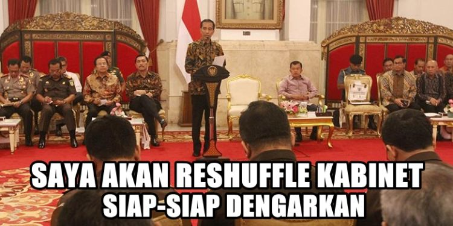
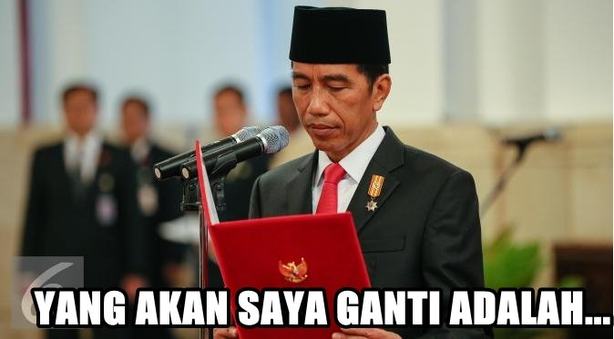
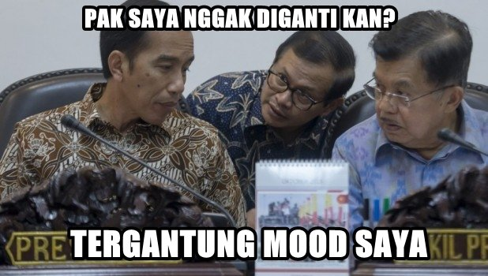
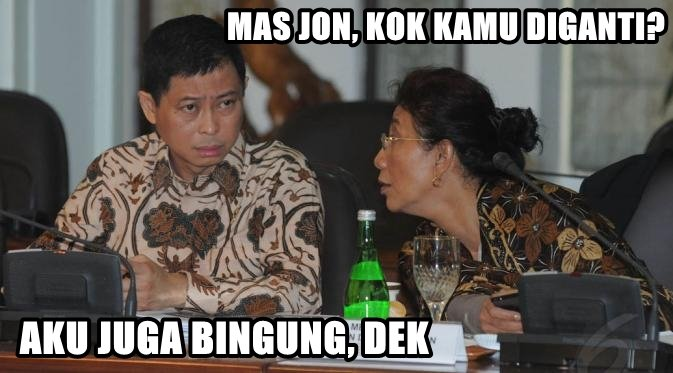
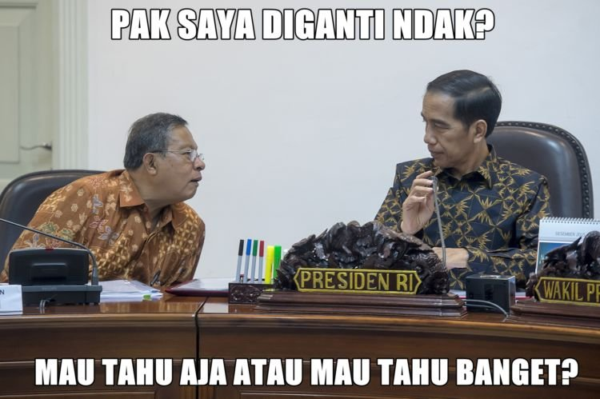
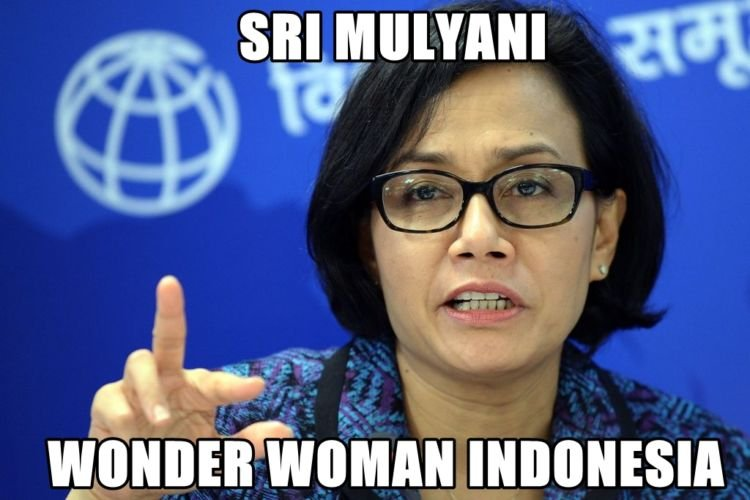

Cerita Tentang Reshuffle
ditulis oleh ariadiprana
Presiden adalah orang yang memiliki jabatan tertinggi dalam negara republik Indonesia ini. Sebagai seorang presiden, Jokowi mempunya hak prerogatif untuk mengganti menteri-menterinya dalam menjalankan fungsinya sebagai kepala negara. Setelah sekian bulan yang lalu Presiden Indonesia melakukan reshuffle, kali ini jilid 2 nya pun terbit. Melalui akun twitter Joko Widodo sendiri, beliau menyampaikan bahwa reshuffle ini dilakukan agar seluruh jajaran pemerintahan dapat bekerja lebih kompak.
Perubahan kabinet untuk perbaikan dan penguatan kinerja. Supaya bisa kerja lebih kompak, lebih cepat, & lebih nyata
- jokowi via twitter @jokowi
Namanya juga netizen, kalau nggak buat meme pasti nggak seru, terkait dengan peristiwa diatas ini maka akhirnya mereka mengedit foto-foto menteri baru untuk dijadikan meme. Daripada pusing mikirin apa yang bisa kita berikan buat negara, yuk lihat meme-meme kocak berikut ini.
 Kalimat ini yang bikin para menteri jantungnya deg-degan nggak karuan Ngerti sih perasaan betapa deg-degannya menteri-menteri yang bakal di-reshuffle itu. Gimana nggak, belum selesai masa jabatan tapi sudah diganti. Hmm, ibarat keselek buah salak tapi dikasih air minum cuma sesendok ~ #gaknyambung.

Deg-deg-deg-deg-deg-deg…
Walaupun uda kerja mati-matian, lembur-lemburan, tidur cuma berapa jam sehari, tetep aja pasti deg-degan nungguin pengumuman ini. Detik demi detik terasa lambat banget, daaan akhirnya..Indonesia Memilih...

Semua tergantung mood presiden
Kalau ada group line atau whatsapp para menteri pasti mereka uda saling tanya-tanyaan siapa tuh yang kira-kira bakal diganti, tapi tetep aja mau tanya kisi-kisi ke siapapun juga UUP. Ujung-ujungnya Presiden sendiri yang milih.

Bye-bye Pak Jonan
Ada yang bilang faktor utama kenapa pak Jonan diganti karena kasus brexit, sudah tau macetnya berhari-hari seperti itu tapi dia sendiri masih ngelak dengan beribu alasan yang intinya bukan salah dia.

Mau tau aja apa mau tau banget
No comment lah kalau ini sih, haha

Welcome Back!
Di era Pak SBY, Bu Sri Mulyani juga menjabat sebagai menteri keuangan karena kecerdasannya. Mengelola uang negara, Bu Sri pernah dinobatkan sebagai Menteri Keuangan Terbaik Asia oleh Emerging Markets pada 18 September 2006 di sela sidang tahunan Bank Dunia dan IMF di Singapura. Kali ini Pak Jokowi kembali memintanya menjadi menteri keuangan di sisa jabatan 2014-2019.